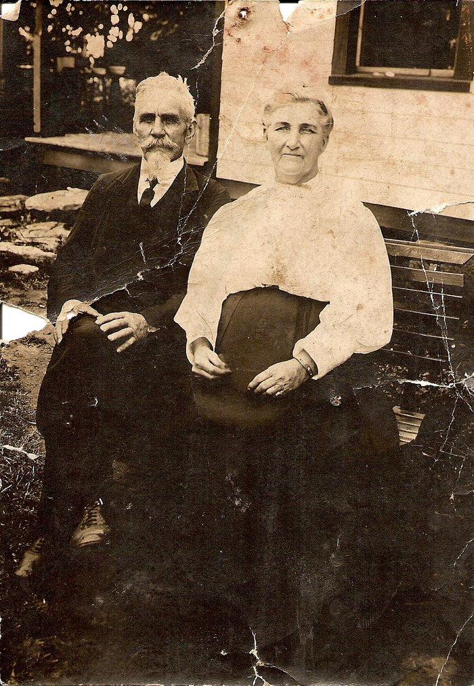

Emaline Mazella Smith Ridenour
1 January 1847 – 17 April 1930
Smith line · Jackson County, Virginia; Mount Alto, Jackson County, West Virginia
Profile status: DOCUMENTED
Quick Facts
Born
1 January 1847, Jackson County, Virginia DOCUMENTED (West Virginia state death certificate No. 4851, image read — born 1 January 1847, age 83 years 3 months 16 days at death on 17 April 1930, which is exact. The shared stone says 1847; the 1900 census says January 1847; the 1860 census, which lists her as “Emillas Smith”, age 13, fits a January 1847 birth. She was raised and married as Emeline; the stone spells EMELINE — the “Emaline” spelling of this page follows the family profile)
Died
17 April 1930, Mount Alto, Jackson County, West Virginia DOCUMENTED (death certificate No. 4851, image read: “Emeline Ridenour, died April 17, 1930, Mt. Alto, Jackson County, W. Va., age 83 years 3 months 16 days, cause of death: fibroid tumor in abdominal cavity, contributory toxic poison, attended by Dr. John Henry White”. Buried at Hopewell Cemetery, Mount Alto, 20 April 1930, undertaker C. J. Fisher)
Married
Rev. Benjamin Franklin Ridenour, 14 April 1864, Jackson County, Virginia
DOCUMENTED (marriage license issued 11 April 1864, Jackson County license-log pp. 178–179, image read. The ceremony date, 14 April 1864, is
SUPPORTED — Benjamin’s own 1928 account, told in “A Civil War Romance”. A third, index-only date, 11 September 1864, is
UNPROVED — the day matches the license, September is likely an indexing error, and the image is restricted)
Name
Recorded as Emeline; “Mazella” is lore only UNPROVED (the name Emaline Mazella Smith is the family profile’s form. No record use of “Mazella” has been found — 0 hits in Melvin Otho Ridenour’s 71,545-line database, and none on Geni or FamilySearch. The stone spells EMELINE; the 1850 census gives Emeline, the 1860 “Emillas”, the 1900 Emeline; the death certificate gives Emeline)
Occupation
Homemaker; mother of fifteen SUPPORTED (1900 census: mother of 15 children, 13 living; the Hopewell stone lists the same fifteen)
Buried
Hopewell Baptist Church Cemetery, Mount Alto, Jackson County, West Virginia DOCUMENTED (death certificate No. 4851: buried Hopewell Cemetery, 20 April 1930; shared stone with Benjamin, read from the photograph: “MOTHER EMELINE 1847 — 1930”)
Religion
Baptist SUPPORTED (buried at Hopewell Baptist Church Cemetery, beside her minister husband)
Immediate Family
Parents
Jackson Smith ×
Nancy Ankrum SUPPORTEDHer parents are named on her own death certificate, No. 4851 — father Jackson Smith, mother Nancy Ankrum — as reported by her daughter Esta, so the parentage is secondhand and stays SUPPORTED. Jackson was born 19 July 1816 and died 19 January 1896, SUPPORTED by his stone (age math exact); Nancy was born 29 November 1820 (WVCPA transcription, age math exact) and died 20 October 1901, killed by a train at Ripley, SUPPORTED by a WikiTree-transcribed newspaper account. Jackson’s own parents are UNKNOWN, and Nancy’s parents are not carried — the William Clark Ankrum × Elizabeth Wells identification is NOT supported, and Ankrum-58 lists no parents for her. The marriage of Jackson × Nancy is DOCUMENTED: 17 October 1839, Jackson County marriage register p. 22, image read, bride recorded as “Caroline Ankrom”, married by Tobias e Mattos. The spelling of her surname is unresolved: Ankrum (death certificate), Ankrom (live page Gen VI), Ankram (index). The full conflicts are in Research Notes.
Spouse
Rev. Benjamin Franklin Ridenour (born 28 March 1845; died 25 April 1932), married 14 April 1864, Jackson County, Virginia
DOCUMENTEDMarriage license issued 11 April 1864, Jackson County — image read. The ceremony date, 14 April 1864, is Benjamin’s own account from 1928, told during a three-month home leave. A third, index-only date, 11 September 1864, is UNPROVED.
Children
Alpha O. Ridenour (born 9 March 1867; died 12 July 1887)
DOCUMENTEDNancy Caroline Ridenour (born 18 February 1868; died 28 July 1894; married Walter Weston Polsley 3 January 1884)
DOCUMENTEDElizabeth Amanda Jane Ridenour (born 1869; died 24 July 1950; married George W. Gerlach 7 July 1888)
SUPPORTEDWalter William Ridenour (born 1871; died 11 November 1962; married Sarah Melvina)
SUPPORTEDMary Minerva Ridenour (born 5 January 1873; died 12 October 1963; married William Christopher Baier 15 September 1895)
SUPPORTEDHawley Ernest Ridenour (born 22 February 1874; died 26 August 1970, Tuskegee, Alabama; married Bessie Shirley 24 December 1898)
SUPPORTEDLewis Delver Ridenour (born 1876; died 1960)
SUPPORTEDEmory Martin Ridenour (born 1877; died 1958)
SUPPORTEDIva Ridenour (born 1879; died 4 February 1969; married William Durst)
SUPPORTEDCecil Ridenour (born 20 February 1881; died 4 March 1968)
SUPPORTEDAnnie Ridenour (born 23 December 1882; died 20 August 1909; married Stephen S. Sayre 2 April 1903)
SUPPORTEDKenneth Franklin Ridenour (born 15 September 1884; died 18 September 1971)
SUPPORTEDIda Mae Ridenour (born 2 April 1886; died 9 February 1977; married Charles Wooster)
SUPPORTEDCleophas Ridenour (born 1 October 1888; died 5 October 1888, aged five days)
DOCUMENTEDEsta Virginia Ridenour (born 23 August 1890; died 6 April 1982; married Eugene Herrenkohl)
DOCUMENTEDNancy Caroline is the direct line — she married Walter Weston Polsley. The roster of fifteen is carried on the parents’ shared stone at Hopewell, listed by two independent cemetery transcriptions in the same names and order, and confirmed by the stone photograph itself; the 1900 census counts Emeline as mother of fifteen children, thirteen living — the tree’s death dates imply twelve living, an unresolved tension. The stone-resolved dates are DOCUMENTED: Alpha born 9 March 1867 (her own stone, age math exact — the shared stone’s 1866 is wrong); Esta born 23 August 1890, died 6 April 1982 (her own stone); Nancy Caroline died 28 July 1894, aged 26 years 5 months 10 days (her own stone); Cleophas died 5 October 1888, aged five days (his own stone). Annie is Anna P. Ridenour Sayre: the St. Louis marriage licence, No. 13358, 2 April 1903, names Stephen Sayre × Miss Annie Ridenour — it names no parents, so the identity is SUPPORTED, not DOCUMENTED; her death year is 1909 by her Sayre stone against 1910 by the parents’ stone. Nancy’s marriage date, 3 January 1884, is UNPROVED — no register entry has been read; she would have been fifteen. The full conflicts are in Research Notes.
Siblings
Thomas Smith (born about 1842)
SUPPORTEDDavid Smith (born about 1844; died 8 April 1923; married Nancy Shinn)
SUPPORTEDAmanda I. Smith (born 27 March 1849; died 6 January 1923; married Daniel Webster)
SUPPORTEDWilliam Smith (born 11 May 1853; died 7 April 1926, Springfield, Ohio)
SUPPORTEDVirginia Smith (born 17 October 1851; died 12 April 1930; married Webster)
SUPPORTEDCaroline “Callie” Smith (born 10 March 1857; died 29 August 1923; married Shirley)
SUPPORTEDLydia Minerva Smith (born 12 November 1859; died 27 July 1950; married Thaddeus Bush 2 June 1878, Jackson County)
SUPPORTEDThe eight children of Jackson Smith × Nancy Ankrum — Emaline is the third. The roster rests on the 1850 and 1860 censuses, read from the images and a WikiTree transcription: the 1850 household (Jackson 31, Nancy 27, Thomas 8, D* 6, Emeline 4, Amanda 1) and the 1860 household (Jackson 45, Nancy E. 36, “Emillas Smith” 13, and seven siblings — Thomas, David, Amanda, Virginia, William, Caroline, and Minerva, aged five months). Sibling dates are Find a Grave entries (UNPROVED) except Thomas’s and David’s, which rest on the 1850 census ages; William’s birth year is split 1853 (Find a Grave) against 1854 (compiled). A household of thirteen children in an old compiled account is CONTRADICTED by those two censuses. No sibling has a profile page, so no sibling name is linked here.
On Family Tree Sites
Life Timeline
1 January 1847 · age 0
Born, Jackson County, Virginia DOCUMENTED (death certificate No. 4851, age math exact)
1850 · age 3
Census, Jackson County, sheet 232A, dwelling 601/607: Jackson Smith 31, Nancy 27, Thomas 8, D* 6, Emeline 4, Amanda 1 DOCUMENTED (image read)
1860 · age 13
Census, Jackson County, dwelling 169, family 159: Jackson Smith 45, Nancy E. 36, “Emillas Smith” 13, and seven siblings SUPPORTED (WikiTree transcription)
11 April 1864 · age 17
Marriage license issued, Jackson County, for Benjamin F. Ridenour and Emeline Smith DOCUMENTED (license-log pp. 178–179, image read)
14 April 1864 · age 17
Married Benjamin Franklin Ridenour, Jackson County, during his three-month home leave SUPPORTED (his 1928 account, told in “A Civil War Romance”)
9 March 1867 · age 20
Daughter Alpha O. born DOCUMENTED (her own stone, age math exact)
18 February 1868 · age 21
Daughter Nancy Caroline born DOCUMENTED (her own stone)
23 August 1890 · age 43
Daughter Esta Virginia born DOCUMENTED (her own stone)
1900 · age 53
Census, Union District, Jackson County, West Virginia, ED 37, Sheet 2B, household 38: Benjamin 55, Emeline 53, married 36 years; Emeline mother of 15 children, 13 living DOCUMENTED (FamilySearch image 366 of 475, read directly)
17 April 1930 · age 83
Died, Mount Alto, of a fibroid tumor in the abdominal cavity DOCUMENTED (death certificate No. 4851)
20 April 1930
Buried, Hopewell Cemetery, Mount Alto DOCUMENTED (death certificate No. 4851; shared stone with Benjamin)
Life Story
Emaline Mazella Smith — recorded in every document as Emeline — was born 1 January 1847 in Jackson County, Virginia, the daughter of Jackson Smith and Nancy Ankrum. Her birth is DOCUMENTED by her own death certificate, No. 4851, which gives her age at death as 83 years 3 months 16 days — exact arithmetic against a 1 January 1847 birth. She was four years old in the 1850 census in her father Jackson’s household, and thirteen in 1860, listed as “Emillas Smith.” The “Mazella” of her name is lore only: no record use of it has been found — 0 hits in Melvin Otho Ridenour’s 71,545-line database, and none on Geni or FamilySearch — and her stone spells EMELINE.
She married Benjamin Franklin Ridenour on 14 April 1864 in Jackson County, in the middle of his Civil War service. The marriage license was issued 11 April 1864 — the image was read directly — and the ceremony fell during his three-month home leave, a story he told in his own words in a 1928 newspaper feature, “A Civil War Romance.” A third, index-only date, 11 September 1864, is UNPROVED: the image is restricted to a FamilySearch affiliate library.
The couple settled at Mount Alto, Jackson County, where Benjamin served for many years as minister of Hopewell Baptist Church, and they raised fifteen children — Alpha, Nancy Caroline, Elizabeth, Walter William, Mary Minerva, Hawley Ernest, Lewis Delver, Emory Martin, Iva, Cecil, Annie, Kenneth Franklin, Ida Mae, Cleophas, and Esta Virginia — all fifteen listed on the parents’ shared stone at Hopewell, and the 1900 census counting Emeline as mother of fifteen children, thirteen living. Nancy Caroline carries the line, marrying Walter Weston Polsley.
Emeline died on 17 April 1930 at Mount Alto, of a fibroid tumor in the abdominal cavity, with toxic poison contributory, attended by Dr. John Henry White. She was buried at Hopewell Cemetery on 20 April 1930, beside the husband who would follow her two years later. No portrait of the couple was known until the Find a Grave memorials were read: the same elderly-couple portrait sits on both spouses’ memorials, posted by arnold daugherty on 13 December 2011, with no caption naming the sitters. Its identification rests on that placement, and the same portrait is Benjamin’s main photo on Geni — it is carried here at SUPPORTED, and it is the hero of this page.
Sources and Evidence
- West Virginia state death certificate No. 4851 (image read): “Emeline Ridenour, died April 17, 1930, Mt. Alto, Jackson County, W. Va., age 83 years 3 months 16 days, born Jan. 1, 1847, Jackson County, W. Va. [sic], cause of death: fibroid tumor in abdominal cavity, contributory toxic poison, attended by Dr. John Henry White, buried Hopewell Cemetery, April 20, 1930, undertaker C. J. Fisher, father Jackson Smith, mother Nancy Ankrum, informant Esta Ridenour” DOCUMENTED (death certificate image)
- Shared stone, Hopewell Baptist Church Cemetery, Mount Alto (photograph read directly): “FATHER REV. BENJAMIN F. 1845 — 1932” / “MOTHER EMELINE 1847 — 1930” — years only DOCUMENTED (photograph)
- Couple portrait, Find a Grave memorials 29136073 and 29136033, photo 2 of 2 on each (arnold daugherty, 13 December 2011, no caption): white-haired man with goatee in a dark suit and tie; woman in a white blouse and dark skirt, seated outdoors on a bench SUPPORTED (identity by Find a Grave placement on both spouses’ memorials; the same portrait is Benjamin’s main photo on Geni)
- Jackson County marriage license image, license-log pp. 178–179 (read directly): “Recorders Office County of Jackson Apr. 11. 1864 / License issued for the Marriage of Benjamin F. Ridenour and Emeline Smith both of this County / Teste Jno. Armstrong Recorder” DOCUMENTED (license image)
- Jackson County marriage register p. 22 (image read): “Jackson Smith / Caroline Ankrom / Oct. 17, 1839 / Tobias e Mattos” — her parents’ marriage DOCUMENTED (register image; the 27 October 1839 date is CONTRADICTED, and a FamilySearch tree’s “17 Oct 1840” has the wrong year)
- United States census 1850, Jackson Smith household, Jackson County (sheet 232A, dwell. 601/607 — image read): Jackson Smith 31, Nancy 27, Thomas 8, D* 6, Emeline 4, Amanda 1 DOCUMENTED (image read)
- United States census 1860, Jackson Smith household, Jackson County (WikiTree transcription, dwell. 169, fam. 159): Jackson Smith 45, Nancy E. 36, “Emillas Smith” 13, and seven siblings SUPPORTED (WikiTree transcription)
- United States census 1900, Benjamin household, Union District, Jackson County, West Virginia (FamilySearch image 366 of 475, ED 37, Sheet 2B, household 38 — image read): Benjamin F. Ridenour, Head, Mar 1845, 55, married 36 years, born Ohio, Farmer; Emeline, Wife, Jan 1847, 53, married 36 years, mother of 15 children, 13 living, born W.Va.; sons Lewis D. (Mar 1876), Emory M. (Oct 1877), Cecil (Oct 1881) DOCUMENTED (image read)
- Jackson Smith’s stone, Hopewell (photograph read): “JACKSON SMITH BORN JULY 19, 1816 DIED JAN. 19, 1896” — age math exact SUPPORTED (photograph; his WVCPA reading gives “d. 19 Jan 1896 aged 79 yrs 6 mo”)
- Nancy Ankrum Smith’s stone, Hopewell (WVCPA transcription — the photographed face is weathered; “DIED Oct. 20, 1901” and “AGED 80 Ys. 10 Ms. 21 Ds.” are legible, but the birth date is not visible on the photograph): “NANCY E. SMITH BORN NOV. 29, 1820 DIED OCT. 20, 1901” — age math exact SUPPORTED (WikiTree-transcribed newspaper account says she was killed by a train at Ripley, but the death date is a Sunday against the article’s “about noon Tuesday” — open)
- Jackson County death register (image read): “Emeline Ridenour, F, W, age 83, d. Apr. 17, 1930, Mt. Alto, Fibroid tumor, father Jackson Smith, mother Nancy Andrew” DOCUMENTED (register image; “Nancy Andrew” is recorded as read — UNPROVED as a variant)
- “Mazella” — lore only: no record use found. Melvin Otho Ridenour’s Ancestors Are Forever database (71,545 lines, downloaded 8 November 2026) gives 0 hits for “Mazella”; no Geni or FamilySearch use found UNPROVED (genuine negative; the name is carried as the family profile’s form, at UNPROVED)
- Hopewell Baptist Church Cemetery, Mount Alto, Jackson County, West Virginia — West Virginia Cemetery Preservation Association reading + Jackson County Cemeteries, Vol. 1 via wvgw.net (both read directly): the parents’ shared stone lists the same fifteen children in the same order; individual stones read from photographs for Alpha (9 March 1867), Nancy C. (28 July 1894, aged 26 years 5 months 10 days), Cleophas (5 October 1888, aged five days), Esta (23 August 1890 – 6 April 1982), and Walter William with Sarah Melvina SUPPORTED (two independent transcriptions + stone photographs)
- St. Louis marriage licence No. 13358, 2 April 1903 (image read): Stephen Sayre × Miss Annie Ridenour SUPPORTED (licence names no parents, so Annie as the couple’s daughter is SUPPORTED, not DOCUMENTED)
- Melvin Otho Ridenour, Ancestors Are Forever, A Ridenour Collection from 893 AD to 2000 AD — database extract (paulridenour.com/MelvinRidenour.doc, downloaded 8 November 2026; local copies in the couple’s Books & Sources folder): Emeline’s entry line 5771; Jackson Smith’s line 48313; Esta’s line 22065 FAMILY ACCOUNT (compiled throughout — useful for leads and conflicts, never a record)
- “A Civil War Romance,” Huntington Herald-Advertiser, 29 April 1928 — full text NOT found free; Chronicling America negative verified; Fisher’s 1977 excerpts are the free substitute, from a photocopy held by a granddaughter, Mrs. Ruth Arnett, Birmingham, Alabama SUPPORTED (excerpts; the ceremony date 14 April 1864 is Benjamin’s own account)
- Geni profiles, read live 8 November 2026: Emaline 6000000152485061877; Jackson Smith 6000000155019373873; Nancy Ankrum 6000000155019329844; Nancy Caroline Ridenour 6000000152479623839 SUPPORTED (compiled; every Geni ID verified live by the signed-in pass, character for character)
- FamilySearch, read live 8 November 2026: Emeline LCTD-2V3; Jackson Smith LHX9-Q7V; Nancy Ankrum LCJT-8W8; Nancy Caroline LH68-VN1; the fifteen children — Alpha Omega KZV6-3CH, Elizabeth Amanda Jane LH6D-HTK, William Walter LH6D-C4Y, Mary Minerva LH6D-ZMX, Hawley Ernest GSL6-BQ2, Lewis Delver L7FX-4BQ, Emory Martin GMD4-9HG, Iva LH6D-8DF, Cecil GHXW-3QP, Annie LH6D-RFZ, Kenneth Franklin LH6D-RPN, Ida Mae LH6D-T9D, Cleophus K4JT-3JJ, Esta Virginia L7FX-HM7 SUPPORTED (IDs verified live, 8 November 2026)
- WikiTree, read live 8 November 2026: Jackson Smith-159488 (parents unknown); Nancy Ankrum-58 (no parents listed); William Clark Ankrum Ankrom-45 (lists William Clark as Jacob’s son, with no Nancy daughter) SUPPORTED (the William Clark Ankrum × Elizabeth Wells identification for Nancy’s parents is NOT supported)
- Find a Grave, read live 8 November 2026: Emeline 29136073; Nancy Ankrum 187448889 (stone photo read directly: the face is weathered — “DIED Oct. 20, 1901” and “AGED 80 Ys. 10 Ms. 21 Ds.” are faintly legible, but the birth date is not visible on the photograph; the 29 Nov 1820 birth date rests on the WVCPA transcription) SUPPORTED (all dates are contributor entries unless a stone photo or record corroborates them)
- Tricia’s Ancestry tree (tree 44342901), read signed in 8 November 2026: exactly five Ankroms (Nancy Caroline Ankrom, Caroline Ankrom, William Clark Ankrum, Jacob Ankrum, William Clark Ankrum); only Nancy Caroline is linked as a child of Benjamin and Emeline; Emaline’s gallery is empty; the couple portrait is NOT in her tree SUPPORTED (harvest; conflicts flagged — the record wins)
- Stone photographs filed to the couple’s Pictures folder (13 WVCPA JPGs + 18 Find a Grave images, read visually by the pull): shared stone front JacksonHopewell1014.jpg and children-panel close-up 1014b.jpg, back 1015.jpg; Alpha 1025.jpg; Nancy C. 1020.jpg and reverse 1021.jpg; Cleophas 1024.jpg; Esta 165.jpg; Walter William 084.jpg; Jackson Smith 008.jpg; Nancy E. Smith 010.jpg; Herrenkohl family stone 175.jpg; Armour Ridenour 083.jpg (not a child of this couple — parentage unknown) SUPPORTED (photographs read visually)
Grades: DOCUMENTED an original record says it · SUPPORTED several records point to it · FAMILY ACCOUNT the family’s own telling · UNPROVED a lead, not proved.
Research Notes and Open Questions
- Grades on this page: DOCUMENTED means an original record was read; SUPPORTED means a claim attested by filed research — the census images, the marriage-license image, the cemetery transcriptions and stone photographs, the signed-in tree checks — but not by an original record read here; UNPROVED means a claim carried from the research folder with no corroboration found.
- Birth: 1 January 1847, Jackson County — DOCUMENTED (death certificate No. 4851, age math exact). The stone says 1847; the 1900 census says January 1847; the 1860 census, which lists her as “Emillas Smith”, age 13, fits a January 1847 birth.
- Death: 17 April 1930, Mount Alto — DOCUMENTED (death certificate No. 4851: fibroid tumor in the abdominal cavity, contributory toxic poison, attended by Dr. John Henry White; buried Hopewell Cemetery 20 April 1930, undertaker C. J. Fisher).
- Name: “Mazella” is lore only — UNPROVED. No record use has been found: 0 hits in Melvin’s 71,545-line database, none on Geni or FamilySearch. The stone spells EMELINE; the censuses give Emeline/“Emillas”/Emeline; the death certificate gives Emeline. “Emaline” is carried as the family profile’s form.
- Marriage: license 11 April 1864 DOCUMENTED (image read); ceremony 14 April 1864 SUPPORTED (Benjamin’s own 1928 account). A third, index-only date, 11 September 1864, is UNPROVED — the day matches the license, September is likely an indexing error, and the image is restricted to a FamilySearch affiliate library.
- Parents: Jackson Smith × Nancy Ankrum at SUPPORTED — named on her own death certificate, No. 4851, as reported by her daughter Esta, so secondhand. The death register gives her mother as “Nancy Andrew” — recorded as read, UNPROVED as a variant. Jackson was born 19 July 1816 and died 19 January 1896, SUPPORTED by his stone (age math exact); Nancy was born 29 November 1820 (WVCPA transcription, age math exact) and died 20 October 1901, killed by a train at Ripley, SUPPORTED by a WikiTree-transcribed newspaper account — but the death date is a Sunday against the article’s “about noon Tuesday”, so the newspaper’s own issue and date are still open.
- Jackson × Nancy’s marriage: 17 October 1839 — DOCUMENTED (Jackson County marriage register p. 22, image read; bride recorded as “Caroline Ankrom”, married by Tobias e Mattos). The 27 October 1839 date is CONTRADICTED; a FamilySearch tree’s “17 Oct 1840” has the wrong year. The surname spelling is unresolved: Ankrum (death certificate — the working spelling here), Ankrom (live page Gen VI), Ankram (index).
- Nancy’s parents: the William Clark Ankrum × Elizabeth Wells identification is NOT supported and is not carried here. Ankrum-58 lists no parents for Nancy; Ankrom-45 lists William Clark as Jacob’s son with no Nancy daughter; William C. Ancrum in Jackson County 1850 has wife Ruth, not Elizabeth Wells. Jackson’s parents are UNKNOWN.
- Siblings: eight carried — Thomas, David, Amanda I., William, Virginia, Caroline “Callie”, Lydia Minerva, and Emaline herself — SUPPORTED by the 1850 and 1860 censuses. A household of thirteen children in an old compiled account is CONTRADICTED by those two censuses; the eight-child roster stands.
- Children: fifteen carried as a set, SUPPORTED; the stone-resolved dates are DOCUMENTED (Alpha 9 March 1867; Esta 23 August 1890 – 6 April 1982; Nancy Caroline 28 July 1894, aged 26 years 5 months 10d; Cleophas 5 October 1888, aged five days). The 1900 census counts fifteen born, thirteen living; the tree’s death dates imply twelve living (Alpha 1887, Cleophas 1888, Nancy Caroline 1894) — unresolved. Find a Grave’s “about 17 children” on both parents’ bios is contributor speculation — the stone lists fifteen.
- Annie is Anna P. Ridenour Sayre — SUPPORTED as the couple’s daughter (St. Louis licence No. 13358, 2 April 1903, Stephen Sayre × Miss Annie Ridenour; the licence names no parents). Her death year is 1909 by her Sayre stone against 1910 by the parents’ stone and Melvin; a duplicate Melvin entry gives 1960, almost certainly a Melvin error. The Sayre marriage record is the decider for the identity.
- Esta’s husband is Eugene Herrenkohl — DOCUMENTED via their son Roy Cecil Herrenkohl’s Virginia death certificate. The Cabell County marriage record was not located, so the marriage date and place stay open; the Hopewell stone reads “A. E. Herrenkohl 1888–1934” — whether A.E. is A. Eugene is unproved.
- Hawley Ernest: birth 1874 (SSDI, Find a Grave, Alabama death record) against 1873 (VA Master Index); died Tuskegee, Macon, Alabama, 1970 — Gainesville, Florida is the burial place (Evergreen Cemetery), CONTRADICTED as the death place. His marriage, 24 December 1898 to Bessie Shirley, is UNPROVED.
- Other child-date conflicts: Elizabeth Gerlach’s birth, 14 September 1869 (Find a Grave) against 25 October 1869 (Jackson County birth register, vol Q-R p. 579, per Find a Grave’s own bio note) — the register is the decider; Emory Martin’s birth, 25 October 1877 (Melvin) against 28 October 1877 (Find a Grave); Iva’s birth, 12 August 1879 (Melvin) against 2 August 1879 (Find a Grave). Walter’s wives Sarah Melvina McDermott and Sue Madden, and the children’s spouses generally, rest on Melvin only — UNPROVED compiled, and need marriage records.
- Open: the 11 September 1864 marriage image (FamilySearch affiliate library); the 1860 census image for the Jackson Smith household (WikiTree transcription only); the newspaper issue and date for Nancy Ankrum Smith’s death; Esta’s Cabell County marriage record; the full text of “A Civil War Romance”; Benjamin’s 1932 state death certificate.
- Tricia’s Ancestry harvest, signed in 8 November 2026: five Ankroms read; only Nancy Caroline is linked as a child of Benjamin and Emeline; Emaline’s gallery is empty; the couple portrait is NOT in her tree — its Find a Grave provenance (posted by arnold daugherty, 13 December 2011) stands alone.
- Tree checks, signed in 8 November 2026: Geni (Emaline 6000000152485061877; Jackson Smith 6000000155019373873; Nancy Ankrum 6000000155019329844; Nancy Caroline Ridenour 6000000152479623839); FamilySearch (Emeline LCTD-2V3; Jackson Smith LHX9-Q7V; Nancy Ankrum LCJT-8W8; Nancy Caroline LH68-VN1); WikiTree (Jackson Smith-159488; Nancy Ankrum-58); Find a Grave (Emeline 29136073; Nancy Ankrum 187448889). No WikiTree profile was found for Emaline or Nancy Caroline Ridenour Polsley — public-search negatives only; no Ancestry person IDs were recorded for the couple, and MyHeritage was not verified — no tiles for either.